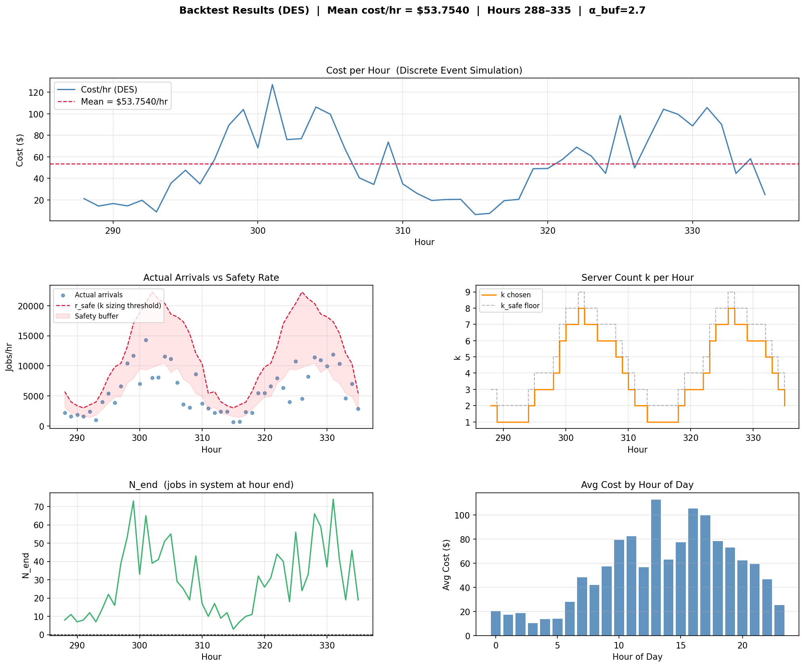

AI-Driven Server Scheduling
Cost-optimal server provisioning using queueing theory, dynamic programming, and time-of-day demand forecasting

Overview
Server over-provisioning wastes money. Under-provisioning triggers SLA penalties that can cost orders of magnitude more. I built an algorithm that decides — for every upcoming hour — exactly how many servers to activate, balancing electricity costs, memory overhead, and congestion penalties using a principled cost model grounded in queueing theory.
What I Built
The system works in two stages. First, it forecasts the arrival rate for the next hour using pre-computed hour-of-day (HOD) statistics derived from historical data — the approach that minimized MAE across all forecasting methods tested. Then, it sizes the server count using a two-step optimization:
- Safety floor — a minimum server count sized for the worst-case peak within the hour, using a safety buffer of
r_safe = r_mean + 2.7 × r_std. The 2.7 coefficient was empirically tuned to achieve 100% coverage of observed hours. - Cost simulation — a 1-hour discrete-time simulation over candidate server counts near the safety floor, using the M/M/k regime equations to propagate expected queue length N(t) and minimize total cost: electricity + memory + SLA penalty.
The cost function penalizes overflow quadratically, which reflects real-world SLA structures where congestion causes disproportionate harm. The asymmetry drives the algorithm to slightly over-provision rather than risk a single bad hour.
Exploratory Data Analysis
Before designing the algorithm, I ran EDA on 336 hours of arrival data to understand demand patterns, service time distributions, and cost sensitivity to server count.

EDA — past_arrivals.csv | 336-hour history
Arrivals per Hour
Clear daily cycles between ~1,500/hr overnight and ~15,000/hr at peak. The regularity justifies using hour-of-day means as the forecasting baseline.
Avg Arrivals by Hour of Day
Demand peaks at hour 16 (~10,400/hr avg) with a smooth bell shape. High variance at peak hours is why a safety buffer is necessary — the mean alone would consistently under-provision.
Service Time (CV = 0.473)
Roughly exponential, supporting the M/M/k model. Slight under-dispersion means the model is conservative — actual queue build-up is a bit milder than predicted.
Inter-Arrival Time (CV = 3.96)
Highly bursty arrivals, far from Poisson. Bursty traffic causes queue spikes that a standard Poisson model would miss entirely, motivating the α = 2.7 safety buffer.
Cost vs k
Cost drops sharply at low k (SLA penalties dominate) then flattens once servers are adequate (electricity becomes the marginal cost). This asymmetry drives the algorithm to avoid under-provisioning at all costs.
Results

Backtest (DES) | Hours 288–335 | α_buf = 2.7
Cost per Hour
Most hours fall well below the $53.75 mean, with occasional afternoon spikes to ~$120. No hour shows the runaway SLA penalties seen without buffering, which would reach thousands of dollars.
Actual Arrivals vs Safety Rate
Actual arrivals stay almost entirely within the r_safe envelope across all 48 backtest hours, confirming that α = 2.7 is correctly calibrated without over-inflating the buffer.
Server Count k per Hour
k scales from 1–2 servers overnight to 8–9 at afternoon peak, closely tracking the demand cycle. The chosen k rarely deviates from k_safe, validating the safety floor logic.
N_end (Jobs at Hour End)
Queue length stays bounded between 0 and ~70 throughout, confirming the system remains stable. Queues drain within each hour rather than accumulating over time.
Avg Cost by Hour of Day
Costs range from ~$15/hr overnight to ~$100/hr at hours 14–16. The afternoon spike reflects both higher server counts and greater arrival variance requiring a larger buffer.
Key Design Decisions
- Separating sizing from simulation: k_safe is computed from the safety rate (worst-case), while the cost simulation uses the point forecast (mean). This prevents over-provisioning caused by using a conservative rate in the simulator.
- Peak shape factor (1.497×): EDA revealed a consistent within-hour ramp-up pattern where the peak 5-minute bin carries 1.497× the hourly mean. Server count is sized for this peak, not the hourly average.
- N₀ initialization via steady-state: Rather than reconstructing queue length through simulation, N₀ is estimated analytically as r_prev / μ_slot — achieving MAE of 0.08 versus MAE of 406 for simulation-based reconstruction.